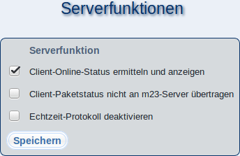

Auf dieser Seite können Sie optionale m23-Funktionen (de)aktivieren.
Zum Aktivieren bzw. Deaktivieren setzen bzw. entfernen Sie den Haken bei der jeweiligen Funktion. Klicken Sie anschließend auf ''Speichern'', um die Änderungen zu übernehmen.
root
2017-12-13